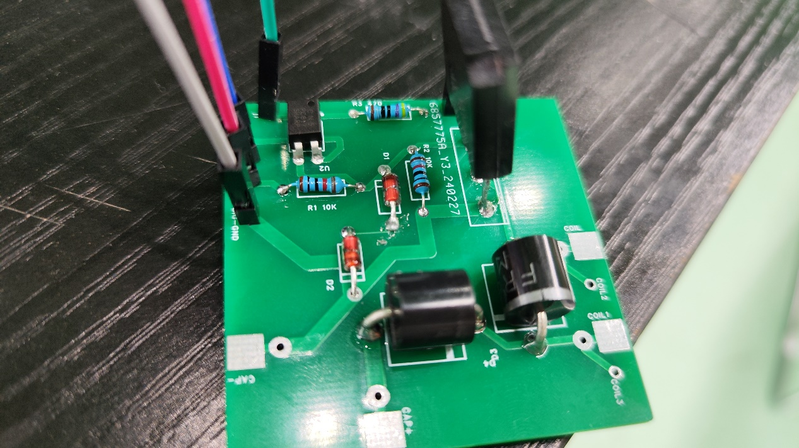
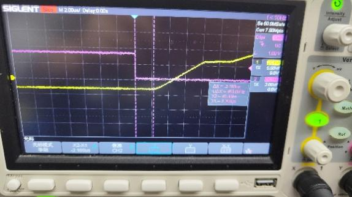
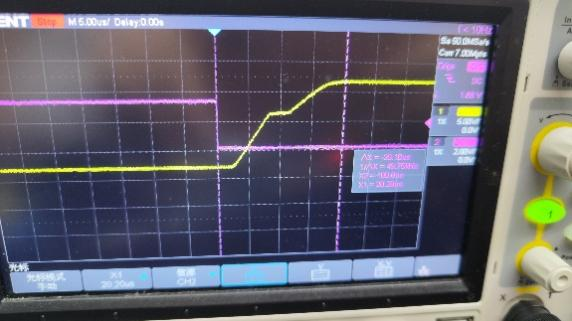
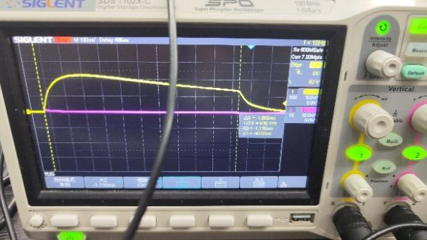

SRTP 学生科研训练项目——电磁炮
| 项目类型 | 学生科研训练项目（SRTP） |
| 结题评级 | 合格 |
| 研究方向 | 电容储能式多级电磁线圈发射技术 |
| 核心芯片 | STM32F103 / IGBT功率管 |
| 核心工具 | SIGLENT示波器 / Altium Designer / 嘉立创PCB生产 |
SRTP是本人在大学期间初次系统参与的科研训练项目。项目以电容储能式电磁炮为载体，从理论建模到电路设计、PCB绘制、IGBT功率管特性实测、多级线圈放电时序控制，经历了完整的"提出问题→方案设计→硬件实现→实验验证→迭代优化"科研闭环。
1 研究背景与目标
电磁发射技术（Electromagnetic Launch, EML）利用安培力取代传统化学发射，具有可控性强、能量转换效率可优化等优势。项目以多级电磁线圈炮（Coilgun）为研究对象，核心目标包括：
- 设计并制作电容储能式多级电磁线圈发射装置
- 实现精确的多级放电时序控制，使弹丸在各级线圈中获得级联加速
- 通过示波器采集IGBT开关管关断/导通波形，分析功率回路瞬态特性
- 验证理论模型与实际放电曲线的一致性，优化能量转换效率
2 系统总体设计——模块化架构
整个电磁炮系统采用模块化设计思路，将复杂系统拆分为三大功能模块：
- 储能模块：多组铝电解电容并联，提供瞬时大电流放电能力；充电回路通过限流电阻控制充电速率，防护电路包含放电保护与过压保护
- 触发模块：IGBT功率管作为主开关器件，通过驱动电路将STM32的低压控制信号转换为IGBT栅极驱动信号；每级线圈对应独立的IGBT触发通道
- 光电检测模块：弹丸经过各级线圈时触发光电传感器，生成中断信号反馈STM32，实现闭环级联触发
为何选择IGBT而非MOSFET？——电磁炮放电瞬间电流可达数十安培，电压可达数百伏。IGBT在高压大电流工况下导通压降低、开关损耗可控，比MOSFET更适合脉冲功率应用。但IGBT关断速度相对较慢（μs级拖尾电流），需要通过实验精确表征关断特性以优化时序。
3 自研触发模块PCB设计
触发模块PCB是本项目硬件设计的核心。在Altium Designer中完成原理图与PCB布局，通过嘉立创生产。

Y3\240227）" onclick="openLightbox(this)">触发模块包含以下关键子电路：
- IGBT驱动电路：R1/R2为10KΩ栅极限流电阻，D1/D2为续流二极管，保护IGBT免受反向电动势损坏
- 储能电容接口：CAP+/CAP-焊盘用于连接储能电容组
- 多级线圈接口：COIL1/COIL2/COIL3三组接口支持三级线圈独立触发
- 信号接口：GND/信号线引脚连接STM32控制端
在PCB布局中，大电流回路（储能电容→IGBT→线圈）的走线宽度≥2mm并覆铜加强，控制信号走线与功率走线物理隔离，减少电磁干扰对控制电路的影响。
4 IGBT关断特性实验分析
IGBT在关断瞬间存在"拖尾电流"现象——栅极信号撤除后，集电极电流并非立即降为零，而是经历一段衰减过程。拖尾电流的持续时间直接影响多级线圈的最小触发间隔。为此，项目进行了系统的IGBT关断波形采集与分析。
 μs/div时基" onclick="openLightbox(this)">
μs/div时基" onclick="openLightbox(this)">

μs/div时基" onclick="openLightbox(this)">实验观察与结论：
- 关断延迟时间td(off) ≈ 1.5 μs：从栅极信号下降沿到集电极电流开始下降的时间
- 下降时间tf ≈ 2.0 μs：电流从90%降至10%的时间
- 拖尾电流持续≈ 3–5 μs：电流降至接近零但伴有振荡
- 关断总时间≈ 6–8 μs，为多级触发间隔设定提供了下限约束
5 多时基放电波形对比实验
为全面表征放电过程的不同时间尺度特征，项目在5μs/div与100μs/div两种时基下分别采集波形：

μs/div时基" onclick="openLightbox(this)">
μs/div时基" onclick="openLightbox(this)">- μs尺度：可观察IGBT开通瞬间的电流上升斜率di/dt，以及线圈电感对电流上升的抑制效应（V = L · di/dt），电流并非突变而是呈指数上升
- ms尺度：可观察完整的RLC放电振荡过程——电容放电→线圈储能→续流衰减的全周期波形，验证了欠阻尼二阶放电模型
6 RLC放电理论模型与实验验证
单级线圈放电过程可等效为RLC串联二阶电路。电容初始电压V0，放电方程为：
\[ L(d2q)/(dt2) + R(dq)/(dt) + (q)/(C) = 0 \]
当R2 < 4L/C（欠阻尼条件）时，放电电流为：
\[ i(t) = (V0)/(ωd L) e-α t sin(ωd t), α = (R)/(2L), ωd = √(1)/(LC) - α2 \]
实验中100μs/div时基下观察到的衰减振荡波形与上述欠阻尼解对应，电流峰值在第一个半周期达到最大，随后指数衰减，验证了理论模型的正确性。
7 项目收获与科研素养
- 完成电容储能式三级电磁线圈发射装置的全系统设计、制作与调试
- 自主设计触发模块PCB（Altium Designer），通过嘉立创生产并焊接验证
- 系统表征IGBT关断特性：关断总时间≈ 6–8 μs
- 实验验证RLC欠阻尼放电模型与实际波形的一致性
- 项目合格结题，培养了文献检索、实验设计、数据分析等基本科研能力